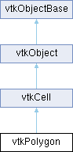

|
Etrek
|
|
Etrek
|
a cell that represents an n-sided polygon More...
#include <vtkPolygon.h>

Public Types | |
| enum | EarCutMeasureTypes { PERIMETER2_TO_AREA_RATIO = 0 , DOT_PRODUCT = 1 , BEST_QUALITY = 2 } |
Public Member Functions | |
| vtkTypeMacro (vtkPolygon, vtkCell) | |
| void | PrintSelf (ostream &os, vtkIndent indent) override |
| double | ComputeArea () |
| void | InterpolateFunctions (const double x[3], double *sf) override |
| bool | IsConvex () |
| int | ParameterizePolygon (double p0[3], double p10[3], double &l10, double p20[3], double &l20, double n[3]) |
| int | Triangulate (int index, vtkIdList *ptIds, vtkPoints *pts) override |
| int | NonDegenerateTriangulate (vtkIdList *outTris) |
| int | BoundedTriangulate (vtkIdList *outTris, double tol) |
| int | GetCellType () override |
| int | GetCellDimension () override |
| int | GetNumberOfEdges () override |
| int | GetNumberOfFaces () override |
| vtkCell * | GetEdge (int edgeId) override |
| vtkCell * | GetFace (int) override |
| int | CellBoundary (int subId, const double pcoords[3], vtkIdList *pts) override |
| void | Contour (double value, vtkDataArray *cellScalars, vtkIncrementalPointLocator *locator, vtkCellArray *verts, vtkCellArray *lines, vtkCellArray *polys, vtkPointData *inPd, vtkPointData *outPd, vtkCellData *inCd, vtkIdType cellId, vtkCellData *outCd) override |
| void | Clip (double value, vtkDataArray *cellScalars, vtkIncrementalPointLocator *locator, vtkCellArray *tris, vtkPointData *inPd, vtkPointData *outPd, vtkCellData *inCd, vtkIdType cellId, vtkCellData *outCd, int insideOut) override |
| int | EvaluatePosition (const double x[3], double closestPoint[3], int &subId, double pcoords[3], double &dist2, double weights[]) override |
| void | EvaluateLocation (int &subId, const double pcoords[3], double x[3], double *weights) override |
| int | IntersectWithLine (const double p1[3], const double p2[3], double tol, double &t, double x[3], double pcoords[3], int &subId) override |
| int | TriangulateLocalIds (int index, vtkIdList *ptIds) override |
| void | Derivatives (int subId, const double pcoords[3], const double *values, int dim, double *derivs) override |
| int | IsPrimaryCell () VTK_FUTURE_CONST override |
| vtkGetMacro (UseMVCInterpolation, bool) | |
| vtkSetMacro (UseMVCInterpolation, bool) | |
| vtkSetClampMacro (Tolerance, double, 0.0, 1.0) | |
| vtkGetMacro (Tolerance, double) | |
| int | EarCutTriangulation (int measure=PERIMETER2_TO_AREA_RATIO) |
| int | EarCutTriangulation (vtkIdList *outTris, int measure=PERIMETER2_TO_AREA_RATIO) |
| int | UnbiasedEarCutTriangulation (int seed, int measure=PERIMETER2_TO_AREA_RATIO) |
| int | UnbiasedEarCutTriangulation (int seed, vtkIdList *outTris, int measure=PERIMETER2_TO_AREA_RATIO) |
| Public Member Functions inherited from vtkCell | |
| vtkTypeMacro (vtkCell, vtkObject) | |
| void | Initialize (int npts, const vtkIdType *pts, vtkPoints *p) |
| void | Initialize (int npts, vtkPoints *p) |
| virtual void | ShallowCopy (vtkCell *c) |
| virtual void | DeepCopy (vtkCell *c) |
| virtual int | IsLinear () VTK_FUTURE_CONST |
| virtual int | RequiresInitialization () |
| virtual void | Initialize () |
| virtual int | IsExplicitCell () VTK_FUTURE_CONST |
| virtual int | RequiresExplicitFaceRepresentation () VTK_FUTURE_CONST |
| virtual void | SetFaces (vtkIdType *vtkNotUsed(faces)) |
| virtual vtkIdType * | GetFaces () |
| vtkPoints * | GetPoints () |
| vtkIdType | GetNumberOfPoints () const |
| vtkIdList * | GetPointIds () |
| vtkIdType | GetPointId (int ptId) VTK_EXPECTS(0< |
| virtual int | Inflate (double dist) |
| virtual double | ComputeBoundingSphere (double center[3]) const |
| virtual int | TriangulateIds (int index, vtkIdList *ptIds) |
| void | GetBounds (double bounds[6]) |
| double * | GetBounds () VTK_SIZEHINT(6) |
| double | GetLength2 () |
| virtual int | GetParametricCenter (double pcoords[3]) |
| virtual double | GetParametricDistance (const double pcoords[3]) |
| virtual double * | GetParametricCoords () VTK_SIZEHINT(3 *GetNumberOfPoints()) |
| virtual void | InterpolateFunctions (const double vtkNotUsed(pcoords)[3], double *vtkNotUsed(weight)) |
| virtual void | InterpolateDerivs (const double vtkNotUsed(pcoords)[3], double *vtkNotUsed(derivs)) |
| virtual int | IntersectWithCell (vtkCell *other, double tol=0.0) |
| virtual int | IntersectWithCell (vtkCell *other, const vtkBoundingBox &boudingBox, const vtkBoundingBox &otherBoundingBox, double tol=0.0) |
| Public Member Functions inherited from vtkObject | |
| vtkBaseTypeMacro (vtkObject, vtkObjectBase) | |
| virtual void | DebugOn () |
| virtual void | DebugOff () |
| bool | GetDebug () |
| void | SetDebug (bool debugFlag) |
| virtual void | Modified () |
| virtual vtkMTimeType | GetMTime () |
| void | RemoveObserver (unsigned long tag) |
| void | RemoveObservers (unsigned long event) |
| void | RemoveObservers (const char *event) |
| void | RemoveAllObservers () |
| vtkTypeBool | HasObserver (unsigned long event) |
| vtkTypeBool | HasObserver (const char *event) |
| vtkTypeBool | InvokeEvent (unsigned long event) |
| vtkTypeBool | InvokeEvent (const char *event) |
| std::string | GetObjectDescription () const override |
| unsigned long | AddObserver (unsigned long event, vtkCommand *, float priority=0.0f) |
| unsigned long | AddObserver (const char *event, vtkCommand *, float priority=0.0f) |
| vtkCommand * | GetCommand (unsigned long tag) |
| void | RemoveObserver (vtkCommand *) |
| void | RemoveObservers (unsigned long event, vtkCommand *) |
| void | RemoveObservers (const char *event, vtkCommand *) |
| vtkTypeBool | HasObserver (unsigned long event, vtkCommand *) |
| vtkTypeBool | HasObserver (const char *event, vtkCommand *) |
| template<class U, class T> | |
| unsigned long | AddObserver (unsigned long event, U observer, void(T::*callback)(), float priority=0.0f) |
| template<class U, class T> | |
| unsigned long | AddObserver (unsigned long event, U observer, void(T::*callback)(vtkObject *, unsigned long, void *), float priority=0.0f) |
| template<class U, class T> | |
| unsigned long | AddObserver (unsigned long event, U observer, bool(T::*callback)(vtkObject *, unsigned long, void *), float priority=0.0f) |
| vtkTypeBool | InvokeEvent (unsigned long event, void *callData) |
| vtkTypeBool | InvokeEvent (const char *event, void *callData) |
| virtual void | SetObjectName (const std::string &objectName) |
| virtual std::string | GetObjectName () const |
| Public Member Functions inherited from vtkObjectBase | |
| const char * | GetClassName () const |
| virtual vtkTypeBool | IsA (const char *name) |
| virtual vtkIdType | GetNumberOfGenerationsFromBase (const char *name) |
| virtual void | Delete () |
| virtual void | FastDelete () |
| void | InitializeObjectBase () |
| void | Print (ostream &os) |
| void | Register (vtkObjectBase *o) |
| virtual void | UnRegister (vtkObjectBase *o) |
| int | GetReferenceCount () |
| void | SetReferenceCount (int) |
| bool | GetIsInMemkind () const |
| virtual void | PrintHeader (ostream &os, vtkIndent indent) |
| virtual void | PrintTrailer (ostream &os, vtkIndent indent) |
| virtual bool | UsesGarbageCollector () const |
Static Public Member Functions | |
| static vtkPolygon * | New () |
| static void | ComputeNormal (int numPts, double *pts, double n[3]) |
| static double | ComputeArea (vtkPoints *p, vtkIdType numPts, const vtkIdType *pts, double normal[3]) |
| static int | PointInPolygon (double x[3], int numPts, double *pts, double bounds[6], double n[3]) |
| static double | DistanceToPolygon (double x[3], int numPts, double *pts, double bounds[6], double closest[3]) |
| static int | IntersectPolygonWithPolygon (int npts, double *pts, double bounds[6], int npts2, double *pts2, double bounds2[6], double tol, double x[3]) |
| static int | IntersectConvex2DCells (vtkCell *cell1, vtkCell *cell2, double tol, double p0[3], double p1[3]) |
| static void | ComputeNormal (vtkPoints *p, int numPts, const vtkIdType *pts, double n[3]) |
| static void | ComputeNormal (vtkPoints *p, double n[3]) |
| static void | ComputeNormal (vtkIdTypeArray *ids, vtkPoints *pts, double n[3]) |
| static bool | IsConvex (vtkPoints *p, int numPts, const vtkIdType *pts) |
| static bool | IsConvex (vtkIdTypeArray *ids, vtkPoints *p) |
| static bool | IsConvex (vtkPoints *p) |
| static bool | ComputeCentroid (vtkPoints *p, int numPts, const vtkIdType *pts, double centroid[3], double tolerance) |
| static bool | ComputeCentroid (vtkPoints *p, int numPts, const vtkIdType *pts, double centroid[3]) |
| static bool | ComputeCentroid (vtkIdTypeArray *ids, vtkPoints *pts, double centroid[3]) |
| Static Public Member Functions inherited from vtkObject | |
| static vtkObject * | New () |
| static void | BreakOnError () |
| static void | SetGlobalWarningDisplay (vtkTypeBool val) |
| static void | GlobalWarningDisplayOn () |
| static void | GlobalWarningDisplayOff () |
| static vtkTypeBool | GetGlobalWarningDisplay () |
| Static Public Member Functions inherited from vtkObjectBase | |
| static vtkTypeBool | IsTypeOf (const char *name) |
| static vtkIdType | GetNumberOfGenerationsFromBaseType (const char *name) |
| static vtkObjectBase * | New () |
| static void | SetMemkindDirectory (const char *directoryname) |
| static bool | GetUsingMemkind () |
Protected Member Functions | |
| void | InterpolateFunctionsUsingMVC (const double x[3], double *weights) |
| void | ComputeTolerance () |
| Protected Member Functions inherited from vtkObject | |
| void | RegisterInternal (vtkObjectBase *, vtkTypeBool check) override |
| void | UnRegisterInternal (vtkObjectBase *, vtkTypeBool check) override |
| void | InternalGrabFocus (vtkCommand *mouseEvents, vtkCommand *keypressEvents=nullptr) |
| void | InternalReleaseFocus () |
| Protected Member Functions inherited from vtkObjectBase | |
| virtual void | ReportReferences (vtkGarbageCollector *) |
| vtkObjectBase (const vtkObjectBase &) | |
| void | operator= (const vtkObjectBase &) |
Protected Attributes | |
| double | Tolerance |
| double | Tol |
| int | SuccessfulTriangulation |
| vtkIdList * | Tris |
| vtkTriangle * | Triangle |
| vtkQuad * | Quad |
| vtkDoubleArray * | TriScalars |
| vtkLine * | Line |
| bool | UseMVCInterpolation |
| Protected Attributes inherited from vtkCell | |
| double | Bounds [6] |
| Protected Attributes inherited from vtkObject | |
| bool | Debug |
| vtkTimeStamp | MTime |
| vtkSubjectHelper * | SubjectHelper |
| std::string | ObjectName |
| Protected Attributes inherited from vtkObjectBase | |
| std::atomic< int32_t > | ReferenceCount |
| vtkWeakPointerBase ** | WeakPointers |
Additional Inherited Members | |
| Public Attributes inherited from vtkCell | |
| vtkPoints * | Points |
| vtkIdList * | PointIds |
| Static Protected Member Functions inherited from vtkObjectBase | |
| static vtkMallocingFunction | GetCurrentMallocFunction () |
| static vtkReallocingFunction | GetCurrentReallocFunction () |
| static vtkFreeingFunction | GetCurrentFreeFunction () |
| static vtkFreeingFunction | GetAlternateFreeFunction () |
a cell that represents an n-sided polygon
vtkPolygon is a concrete implementation of vtkCell to represent a 2D n-sided polygon. The polygons cannot have any internal holes, and cannot self-intersect. Define the polygon with n-points ordered in the counter- clockwise direction; do not repeat the last point.
| int vtkPolygon::BoundedTriangulate | ( | vtkIdList * | outTris, |
| double | tol ) |
Triangulate polygon and enforce that the ratio of the smallest triangle area to the polygon area is greater than a user-defined tolerance. The user must provide the vtkIdList outTris. On output, the outTris list contains the ids of the points defining the triangulation. The ids are ordered into groups of three: each three-group defines one triangle.
|
overridevirtual |
Given parametric coordinates of a point, return the closest cell boundary, and whether the point is inside or outside of the cell. The cell boundary is defined by a list of points (pts) that specify a face (3D cell), edge (2D cell), or vertex (1D cell). If the return value of the method is != 0, then the point is inside the cell.
Implements vtkCell.
|
overridevirtual |
Cut (or clip) the cell based on the input cellScalars and the specified value. The output of the clip operation will be one or more cells of the same topological dimension as the original cell. The flag insideOut controls what part of the cell is considered inside - normally cell points whose scalar value is greater than "value" are considered inside. If insideOut is on, this is reversed. Also, if the output cell data is non-nullptr, the cell data from the clipped cell is passed to the generated contouring primitives. (Note: the CopyAllocate() method must be invoked on both the output cell and point data. The cellId refers to the cell from which the cell data is copied.)
Implements vtkCell.
| double vtkPolygon::ComputeArea | ( | ) |
Compute the area of a polygon. This is a convenience function which simply calls static double ComputeArea(vtkPoints *p, vtkIdType numPts, vtkIdType *pts, double normal[3]); with the appropriate parameters from the instantiated vtkPolygon.
|
static |
Compute the area of a polygon in 3D. The area is returned, as well as the normal (a side effect of using this method). If you desire to compute the area of a triangle, use vtkTriangleArea which is faster. If pts==nullptr, point indexing is supposed to be {0, 1, ..., numPts-1}. If you already have a vtkPolygon instantiated, a convenience function, ComputeArea() is provided.
|
static |
Compute the centroid of a set of points. Returns false if the computation is invalid (this occurs when numPts=0 or when ids is empty).
The strategy used is to compute the average coordinate x_c (the center, but not the centroid of the polygon) and then apply the "geometric decomposition" method for centroids to an area-weighted sum centroids of triangles formed from the center x_c to each edge of the polygon.
This method is robust to significant non-planarity of the polygon, but not so much that the normal computation is invalid. If the normal cannot be determined or the total area of the polygon is near zero, then false will be returned.
If a tolerance is provided, the ratio of the out-of-plane extent of the polygon (dZ) relative to the longest in-plane extent of the polygon (dS) is compared to it. If dZ / dS > tolerance , then false will be returned and the centroid will be unmodified.
The default is tolerance of 0.1. To ignore non-planar polygons, pass a tolerance < – but note that the normal is estimated from the point coordinates and thus the centroid will become ill-conditioned for large deviations from the plane.
|
static |
Compute the polygon normal from an array of points. This version assumes that the polygon is convex, and looks for the first valid normal.
|
static |
Computes the unit normal to the polygon. If pts=nullptr, point indexing is assumed to be {0, 1, ..., numPts-1}.
|
overridevirtual |
Generate contouring primitives. The scalar list cellScalars are scalar values at each cell point. The point locator is essentially a points list that merges points as they are inserted (i.e., prevents duplicates). Contouring primitives can be vertices, lines, or polygons. It is possible to interpolate point data along the edge by providing input and output point data - if outPd is nullptr, then no interpolation is performed. Also, if the output cell data is non-nullptr, the cell data from the contoured cell is passed to the generated contouring primitives. (Note: the CopyAllocate() method must be invoked on both the output cell and point data. The cellId refers to the cell from which the cell data is copied.)
Implements vtkCell.
|
overridevirtual |
Compute derivatives given cell subId and parametric coordinates. The values array is a series of data value(s) at the cell points. There is a one-to-one correspondence between cell point and data value(s). Dim is the number of data values per cell point. Derivs are derivatives in the x-y-z coordinate directions for each data value. Thus, if computing derivatives for a scalar function in a hexahedron, dim=1, 8 values are supplied, and 3 deriv values are returned (i.e., derivatives in x-y-z directions). On the other hand, if computing derivatives of velocity (vx,vy,vz) dim=3, 24 values are supplied ((vx,vy,vz)1, (vx,vy,vz)2, ....()8), and 9 deriv values are returned ((d(vx)/dx),(d(vx)/dy),(d(vx)/dz), (d(vy)/dx),(d(vy)/dy), (d(vy)/dz), (d(vz)/dx),(d(vz)/dy),(d(vz)/dz)).
Implements vtkCell.
|
static |
| int vtkPolygon::EarCutTriangulation | ( | int | measure = PERIMETER2_TO_AREA_RATIO | ) |
A fast triangulation method. Uses recursive divide and conquer based on plane splitting to reduce loop into triangles. The cell (e.g., triangle) is presumed properly initialized (i.e., Points and PointIds). Ears can be removed using different measures (the measures indicate convexity plus characterize the local geometry around each vertex).
|
overridevirtual |
|
overridevirtual |
Given a point x[3] return inside(=1), outside(=0) cell, or (-1) computational problem encountered; evaluate parametric coordinates, sub-cell id (!=0 only if cell is composite), distance squared of point x[3] to cell (in particular, the sub-cell indicated), closest point on cell to x[3] (unless closestPoint is null, in which case, the closest point and dist2 are not found), and interpolation weights in cell. (The number of weights is equal to the number of points defining the cell). Note: on rare occasions a -1 is returned from the method. This means that numerical error has occurred and all data returned from this method should be ignored. Also, inside/outside is determine parametrically. That is, a point is inside if it satisfies parametric limits. This can cause problems for cells of topological dimension 2 or less, since a point in 3D can project onto the cell within parametric limits but be "far" from the cell. Thus the value dist2 may be checked to determine true in/out.
Implements vtkCell.
|
inlineoverridevirtual |
Return the topological dimensional of the cell (0,1,2, or 3).
Implements vtkCell.
|
inlineoverridevirtual |
|
inlineoverridevirtual |
Return the face cell from the faceId of the cell. The returned vtkCell is an object owned by this instance, hence the return value must not be deleted by the caller.
Implements vtkCell.
|
inlineoverridevirtual |
Return the number of edges in the cell.
Implements vtkCell.
|
inlineoverridevirtual |
Return the number of faces in the cell.
Implements vtkCell.
|
override |
Compute the interpolation functions/derivatives. (aka shape functions/derivatives) Two interpolation algorithms are available: 1/r^2 and Mean Value Coordinate. The former is used by default. To use the second algorithm, set UseMVCInterpolation to be true. The function assumes the input point lies on the polygon plane without checking that.
|
static |
Intersect two convex 2D polygons to produce a line segment as output. The return status of the methods indicated no intersection (returns 0); a single point of intersection (returns 1); or a line segment (i.e., two points of intersection, returns 2). The points of intersection are returned in the arrays p0 and p1. If less than two points of intersection are generated then p1 and/or p0 may be indeterminiate. Finally, if the two convex polygons are parallel, then "0" is returned (i.e., no intersection) even if the triangles lie on one another.
|
static |
Method intersects two polygons. You must supply the number of points and point coordinates (npts, *pts) and the bounding box (bounds) of the two polygons. Also supply a tolerance squared for controlling error. The method returns 1 if there is an intersection, and 0 if not. A single point of intersection x[3] is also returned if there is an intersection.
|
overridevirtual |
Intersect with a ray. Return parametric coordinates (both line and cell) and global intersection coordinates, given ray definition p1[3], p2[3] and tolerance tol. The method returns non-zero value if intersection occurs. A parametric distance t between 0 and 1 along the ray representing the intersection point, the point coordinates x[3] in data coordinates and also pcoords[3] in parametric coordinates. subId is the index within the cell if a composed cell like a triangle strip.
Implements vtkCell.
| bool vtkPolygon::IsConvex | ( | ) |
Determine whether or not a polygon is convex. This is a convenience function that simply calls static bool IsConvex(int numPts, vtkIdType *pts, vtkPoints *p) with the appropriate parameters from the instantiated vtkPolygon.
|
static |
Determine whether or not a polygon is convex. If pts=nullptr, point indexing is assumed to be {0, 1, ..., numPts-1}.
|
inlineoverridevirtual |
Return whether this cell type has a fixed topology or whether the topology varies depending on the data (e.g., vtkConvexPointSet). This compares to composite cells that are typically composed of primary cells (e.g., a triangle strip composite cell is made up of triangle primary cells).
Reimplemented from vtkCell.
| int vtkPolygon::NonDegenerateTriangulate | ( | vtkIdList * | outTris | ) |
Same as Triangulate(vtkIdList *outTris) but with a first pass to split the polygon into non-degenerate polygons.
| int vtkPolygon::ParameterizePolygon | ( | double | p0[3], |
| double | p10[3], | ||
| double & | l10, | ||
| double | p20[3], | ||
| double & | l20, | ||
| double | n[3] ) |
Create a local s-t coordinate system for a polygon. The point p0 is the origin of the local system, p10 is s-axis vector, and p20 is the t-axis vector. (These are expressed in the modeling coordinate system and are vectors of dimension [3].) The values l20 and l20 are the lengths of the vectors p10 and p20, and n is the polygon normal.
|
static |
Determine whether a point is inside the specified polygon. The function computes the winding number to assess inclusion. It works for arbitrary polygon shapes (e.g., non-convex) oriented arbitrarily in 3D space. Returns 0 if the point is not in the polygon; 1 if it is. Can also return -1 to indicate a degenerate polygon. Parameters passed into the method include the point in question x[3]; the polygon defined by (npts,pts); the bounds of the polygon bounds[6]; and the normal n[3] to the polygon. (The implementation was inspired by Dan Sunday's book Practical Geometry Algorithms.) This method is thread safe.
|
overridevirtual |
Generate simplices of proper dimension. If cell is 3D, tetrahedra are generated; if 2D triangles; if 1D lines; if 0D points. The form of the output is a sequence of points, each n+1 points (where n is topological cell dimension) defining a simplex. The index is a parameter that controls which triangulation to use (if more than one is possible). If numerical degeneracy encountered, 0 is returned, otherwise 1 is returned. This method does not insert new points: all the points that define the simplices are the points that define the cell.
Reimplemented from vtkCell.
|
overridevirtual |
Generate simplices of proper dimension. If cell is 3D, tetrahedra are generated; if 2D triangles; if 1D lines; if 0D points. The form of the output is a sequence of points, each n+1 points (where n is topological cell dimension) defining a simplex. The index is a parameter that controls which triangulation to use (if more than one is possible). If numerical degeneracy encountered, 0 is returned, otherwise 1 is returned. This method does not insert new points: all the points that define the simplices are the points that define the cell. ptIds are the local indices with respect to the cell
Implements vtkCell.
| int vtkPolygon::UnbiasedEarCutTriangulation | ( | int | seed, |
| int | measure = PERIMETER2_TO_AREA_RATIO ) |
A fast triangulation method. Uses recursive divide and conquer based on plane splitting to reduce loop into triangles. The cell (e.g., triangle) is presumed properly initialized (i.e., Points and PointIds). Unlike EarCutTriangulation(), vertices are visited sequentially without preference to angle.
| vtkPolygon::vtkGetMacro | ( | UseMVCInterpolation | , |
| bool | ) |
Set/Get the flag indicating whether to use Mean Value Coordinate for the interpolation. If true, InterpolateFunctions() uses the Mean Value Coordinate to compute weights. Otherwise, the conventional 1/r^2 method is used. The UseMVCInterpolation parameter is set to false by default.
| vtkPolygon::vtkSetClampMacro | ( | Tolerance | , |
| double | , | ||
| 0. | 0, | ||
| 1. | 0 ) |
Specify an internal tolerance for operations requiring polygon triangulation. (For example, clipping and contouring operations proceed by first triangulating the polygon, and then clipping/contouring the resulting triangles.) This is a normalized tolerance value multiplied by the diagonal length of the polygon bounding box. Is it used to determine whether potential triangulation edges intersect one another.